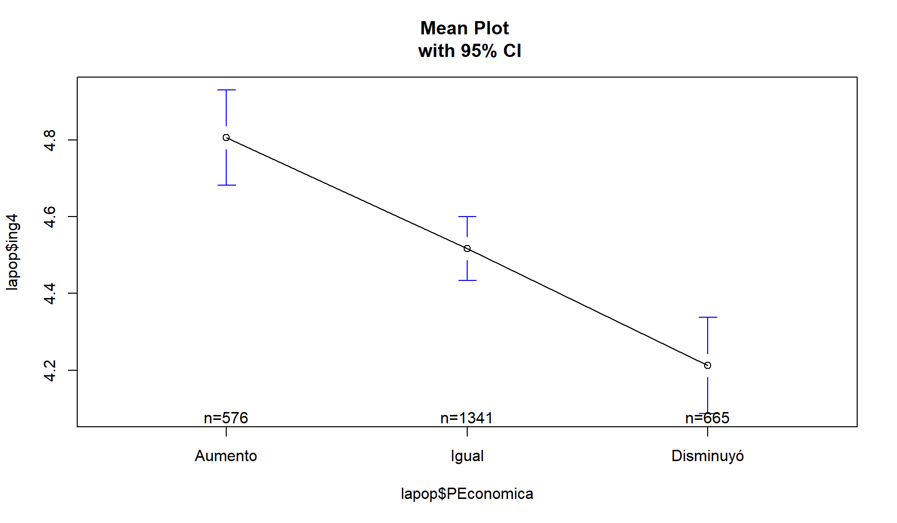

#getwd()
#setwd("") # Indicar el directorio de trabajo
#dir()
library(rio)
lapop = import("./data/s6/LAPOP20172016.sav") # Abrir la base de datos
#names(datalapop)
#str(datalapop)
#class(datalapop) 4 Comparación de grupos
- El objetivo de esta sesión es aplicar la técnica de ANOVA en R
4.1 PASO 1: Formato
PEconomica:
lapop$PEconomica = as.factor(lapop$q10e)
levels(lapop$PEconomica)[1] "1" "2" "3"levels(lapop$PEconomica) <- c("Aumento", "Igual", "Disminuyó")
lapop <- lapop[!is.na(lapop$PEconomica), ]table(lapop$PEconomica)
Aumento Igual Disminuyó
578 1366 685 ing4: Apoyo a la democracia -> Variable ordinal de 7 categorias tambien la podemos tratar como numerica (per se no lo es), pues va a tener cierta variabilidad.
lapop$ing4 = as.numeric(lapop$ing4)
lapop <- lapop[!is.na(lapop$ing4), ] # Eliminando NA
summary(lapop$ing4) # Resumen Min. 1st Qu. Median Mean 3rd Qu. Max.
1.000 4.000 5.000 4.503 6.000 7.000 4.2 PASO 2: Medias en los grupos
- Para ver por grupos
library(psych)
describeBy(lapop$ing4, group = lapop$PEconomica)
Descriptive statistics by group
group: Aumento
vars n mean sd median trimmed mad min max range skew kurtosis se
X1 1 576 4.81 1.52 5 4.89 1.48 1 7 6 -0.41 -0.14 0.06
------------------------------------------------------------
group: Igual
vars n mean sd median trimmed mad min max range skew kurtosis se
X1 1 1341 4.52 1.55 5 4.58 1.48 1 7 6 -0.31 -0.41 0.04
------------------------------------------------------------
group: Disminuyó
vars n mean sd median trimmed mad min max range skew kurtosis se
X1 1 665 4.21 1.65 4 4.24 1.48 1 7 6 -0.17 -0.59 0.06- Otra alternativa al descriBy, pero solo para obtener la Media y la desviacion estandar:
with(lapop, do.call(rbind, tapply
(ing4, PEconomica, function(x)
c(Media = mean(x),
SD = sd(x))))) Media SD
Aumento 4.805556 1.516416
Igual 4.516779 1.553732
Disminuyó 4.212030 1.647883Parece que el apoyo a la democracia en promedio es mayor en las personas que consideran que aumentó
Parece que el apoyo a la democracia en promedio es menor en aquellas personas que consideran que disminuyó
Pero en suma: promedios similares, es decir, no podemos garantizar si son diferentes signifcativamente. La dispersion es baja.
4.3 PASO 3: REQUISITOS
- NORMALIDAD DE LA VARIABLE NUMÉRICA
Cuando tengo un n menor a 50 casos (Fijarnos en las observaciones de la data), usamos la prueba de normalidad Shapiro-Wilk
Hipotesis para ambas pruebas: (H0 = La variable se distribuye normalmente)
Entonces, debemos utilizar la prueba Kolmogorov-Smirnov (mayor a 50 casos)
Prueba Shapiro-Wilk
library(nortest)
#by(lapop$ing4, lapop$PEconomica, shapiro.test) # Menor a 50 casosInterpretacion en caso sea menor a 50 casos:
De acuerdo con el criterio del p-value menor a 0.05, rechazamos la H0. Entpnces, parece que esta variable no se comporta de manera normal en ninguno de los 3 grupos.
Prueba Kolmogorov-Smirnov
#library(nortest)
by(lapop$ing4, lapop$PEconomica, lillie.test) # Mayor a 50 casoslapop$PEconomica: Aumento
Lilliefors (Kolmogorov-Smirnov) normality test
data: dd[x, ]
D = 0.13965, p-value < 2.2e-16
------------------------------------------------------------
lapop$PEconomica: Igual
Lilliefors (Kolmogorov-Smirnov) normality test
data: dd[x, ]
D = 0.14634, p-value < 2.2e-16
------------------------------------------------------------
lapop$PEconomica: Disminuyó
Lilliefors (Kolmogorov-Smirnov) normality test
data: dd[x, ]
D = 0.14204, p-value < 2.2e-16Interpretacion:
De acuerdo con el criterio del p-value menor a 0.05, rechazamos la H0. Entpnces, parece que esta variable no se comporta de manera normal en ninguno de los 3 grupos. o La variable no se distribuye normalmente.
PRUEBA DE HOMOGENEIDAD DE VARIANZA
Prueba de igualdad de varianzas (Homocedasticidad). La prueba de Levene tiene como
- H0 = las varianzas son iguales
library(car)
leveneTest(lapop$ing4, lapop$PEconomica) #Prueba de Levene, Pr es igual al PvalueLevene's Test for Homogeneity of Variance (center = median)
Df F value Pr(>F)
group 2 2.2859 0.1019
2579 - Fijarnos en el Pr(>F): En este caso, aceptamos la H0, es probable que las varianzas sean iguales o similares.
Interpretacion:
- El p-valor sale 0.1019 que es mayor a 0.05, entonces no rechazo la hipotesis nula. Conclusion es que las varianzas son iguales.
Hasta aquí, advertimos que la variable no ha cumplido con el supuesto de normalidad (prueba Kolgomorov), pero sí la prueba de varianza (Levene). Es decir, ya no se puede continuar con la prueba ANOVA, Sino con otras pruebas de Estadistica no parametrica.
A menos que la pregunta solo pida la prueba Anova, asumiendo que hay normalidad (Estadistica parametrica) se continuara con Anova.
- Entonces, asumiremos que sí hay normalidad y continuaremos con la prueba ANOVA:
4.4 PASO 4: ANOVA
H0: Las medias son iguales
HA: Al menos una media es diferente
anova <- aov(lapop$ing4 ~ lapop$PEconomica)
summary(anova) Df Sum Sq Mean Sq F value Pr(>F)
lapop$PEconomica 2 109 54.64 22.16 2.88e-10 ***
Residuals 2579 6360 2.47
---
Signif. codes: 0 '***' 0.001 '**' 0.01 '*' 0.05 '.' 0.1 ' ' 1- Df: Grados de Libertad
- Sum Sq: suma de cuadrados
- Mean Sq: promedio de suma de cuadrados
- F value: Estadistico F
- Pr(>F): P-value del estadistico F <- Ayuda a determinar si rechazamos o no la hipotesis nula
Entonces, rechazamos la hipotesis nula, 2.88e-10 es menor a 0.05. Es decir, al menos una de las medias es diferente (de los 3 grupos). Además el estadistico F (22.16) es muy alto
- Para comprobar qué grupos son iguales o no
Prueba TukeyHSD: comparacion multiple de promedios
TukeyHSD(anova) # H0: las medias son iguales / No son diferentes Tukey multiple comparisons of means
95% family-wise confidence level
Fit: aov(formula = lapop$ing4 ~ lapop$PEconomica)
$`lapop$PEconomica`
diff lwr upr p adj
Igual-Aumento -0.2887770 -0.4722400 -0.1053140 0.0006666
Disminuyó-Aumento -0.5935255 -0.8031427 -0.3839083 0.0000000
Disminuyó-Igual -0.3047484 -0.4794124 -0.1300845 0.0001307Se lee así:
- La diferencia entre los promedios de (
Igual-Aumento) es signficativa, ya que el (p adj) es menor a 0.05 (0.0006666). Además, a un 95% del nivel de confianza, el intervalo de confianza en el que oscila esta diferencia está entre 47% y el 10%
En el caso de esta variable (ing4), advertimos que todas la diferencias de promedios son signficativas.
ENTONCES, sí hay relacion entre la autopercepción economica y el apoyo a la democracia. se evidencia que los promedios dentro de los grupos nos anuncian que mientras que el apoyo a la democracia en promedio es alto la perpecion economica tambien lo es en el grupo de las personas que consideran que aumentó.
Sí impacta el apoyo a la democracia en la autopercepción economica. Es decir, si la gente considera que sus ingresos hayn disminuido, su apoyo a la democracia va a tender a disminuir.
Este es un indicador importante, aun más que medir el PBI y el apoyo a la democracia.
4.5 GRAFICO
ing4
library(ggplot2)
library(plotly)
boxplot <- ggplot(lapop, aes(y = ing4, x = PEconomica,
fill = factor(PEconomica))) +
geom_boxplot() +
xlab("Percepción económica") +
ylab("Apoyo a la democracia")
ggplotly(boxplot)Figure 1: Docentes según sexo (ENDO 2020).
Advertimos rapidamente que la distribucion es similar y quizas la mediana tambien en los boxplots de
aumentoeigual.En este caso, si queremos ver promedios es mejor advertirlas en las barras de error. No recomendable un boxplot.
BARRAS DE ERROR
library(gplots)
plotmeans(lapop$ing4 ~ lapop$PEconomica, p = 0.95,
main = "Mean Plot \n with 95% CI")
Interpretación: - En este caso no se traslapan. son diferentes signficativamente
si se traslapan la diferencia podria ser 0.